Media storage
When storing media such as images, there are basically two choices: the file system or the database.
Database storage
The database storage has the advantage that it's relatively easier to set-up and to not require additional writing privileges. When media are attached to other database-bound objects such as a contents page, it also makes the management a little easier as the association between the object and the media it uses is explicit. On the other hand, such a structure also makes it more difficult to reuse media across objects.
Database storage also provides great freedom to add arbitrary metadata and also handle multiple revisions, drafts, etc.
To properly scale, a database storage for media will probably have to implement many features of a file system, which may be expensive to implement.
From the end-user management perspective, the database is a black box. The web interface being the only way to explore the contents can be seen as a disadvantage.
Uploading tools are also more constrained with a database storage: with the file system, any FTP tool can upload, in addition to web-based uploads. With database storage, only web uploads are possible. XML-RPC APIs such as the Atom Publishing Protocol are appearing though, enabling media publishing from non-web-based tools.
Another problem with the database storage is performance: IIS serves static files a lot faster than dynamic resources.
File system storage
Storing media in the file system looks like a natural choice. It makes it very easy to manage the files, even without using the application: open an FTP client, navigate to the contents/media folder and explore at will.
File system storage also enables the application to associate content entities with the media they use by automatically creating folders with the entities' slugs but the association is less robust than with database storage: there is no reference integrity checks and it is possible to delete the media and end up with the dreaded red crosses in web pages. Similarly, if the content goes away and the media are not deleted, this might lead the media folder to slowly rot.
Metadata can be managed in the database even if the media is in the file system, but that also leads to integrity problems. Metadata can also be managed with files next to the media files. Finally, most media formats support meta-data right in the media file. For example, photographic formats support EXIF data. Meta-data is best handled using the storage that the media format already provides, as the workflow that produces those media files already uses tools that understand native embedded meta-data formats.
File system or database?
That decision could actually be abstracted away by virtual path providers but those don't run in medium trust on .NET 3.5. Effectively, they will be abstracted away from the outside as they will be available through XML-RPC APIs. Without using virtual path providers, it is still possible to go with an abstraction, enabling for database storage even if our default implementation is the file system.
As the default, we are implementing the file system storage, with a thin abstraction layer to still allow for alternative implementations and easier testing.
Scenarios
From the page editor, I can upload an image and insert it into a content zone
Users must be able to upload and use media in their contents without leaving the page editor. The goal of this scenario is that the online content editing experience is on par with the LiveWriter experience.
In the case where JavaScript is enabled, a rich text editor is displayed in admin UI to edit contents. This rich-text editor will be extended to add an "Upload picture" button to the editor's toolbar. Pressing this button will bring an overlay dialog that contains a file upload field and an "Upload" button. The user would click "browse" on the upload field, would navigate to a file on his local hard drive, select it and then click OK to close the choose file dialog. He would then click "Upload". The image would then be uploaded, and on completion, would be automatically inserted into the contents being edited at the position of the caret.
The location on the site where the media get uploaded would be similar to the case of LiveWriter post creation. That means in particular that a folder gets auto-created from the slug to contain the uploaded files. For a blog post, the uploading location could be: /media/[slugOfMyBlog]/[SlugOfMyPost]/[ImageFileName].[extension (jpg, png, etc.)].
If an image with the same name already exists in the uploading folder, a number gets automatically appended to the file name to make it unique.
Note: Flow 1 below represents a non-JavaScript scenario for the same thing, which we won't implement at this time.
From the page editor, I can browse to an existing image and insert it into a content zone
See flow 2 below. Media can be reused across different pieces of contents.
I can manage the files on the site
See flow 2 below. Media management has its own specialized management UI.
When JavaScript is off, I can still upload an image and get its URL as a result, which I can use in an img tag
See flow 1 below. Embedding media in contents is easy with or without JavaScript.
Permissions
In this context, owner means the media asset owner when acting on a specific asset, or the folder owner otherwise.
Note: Front-end viewing permissions for media are out of the scope of Orchard permissions because media are being served directly by IIS without intervention of the ASP.NET pipeline. Thus, the view permissions for media really are file-level permissions and should be managed at that level if the need arises.
Default permissions are:
| Permission | Anon. | Authentic. | Owner | Admin. | Author | Editor |
|---|---|---|---|---|---|---|
| Upload & manage media (modify/rename/delete) | No | No | Yes | Yes | Yes | Yes |
| Create and manage media folders | No | No | Yes | Yes | Yes | No |
Flows
Flow 1: media uploading and embedding with JavaScript disabled from the page editor
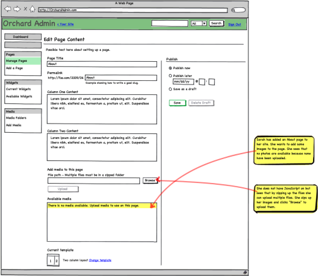
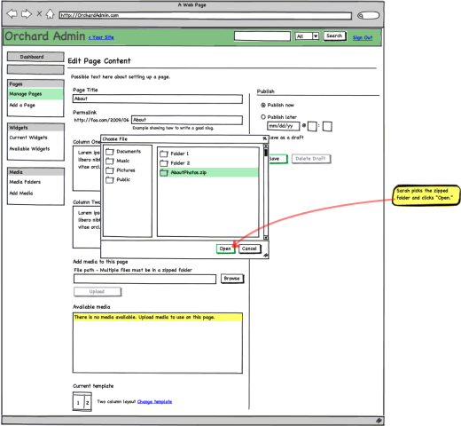
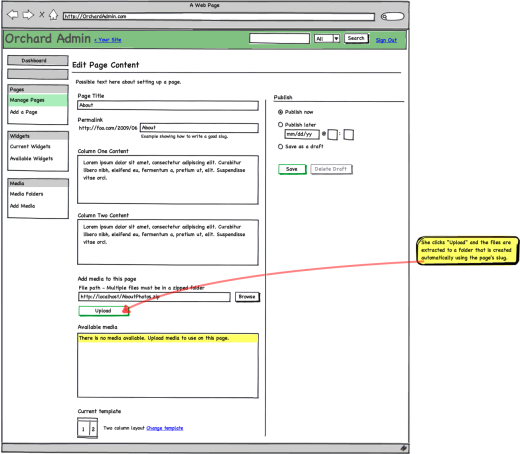

Flow 2: media management


 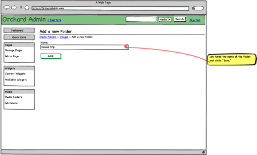
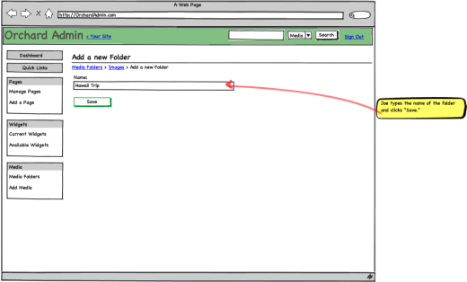
 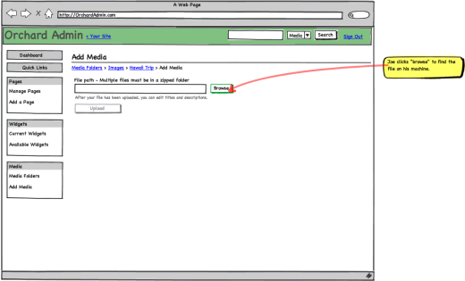
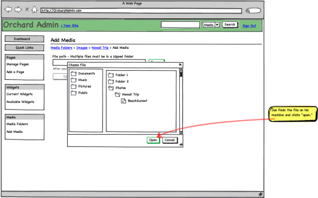
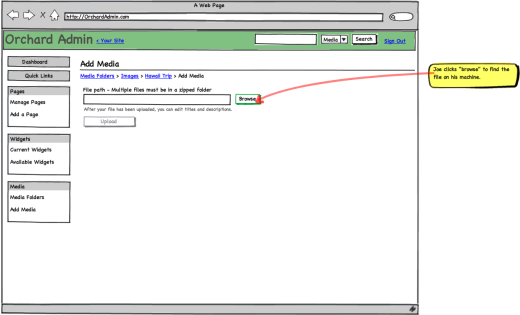
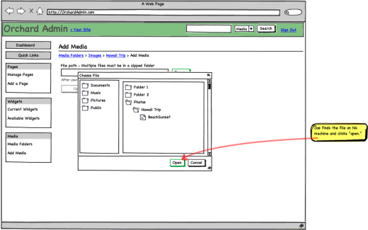


 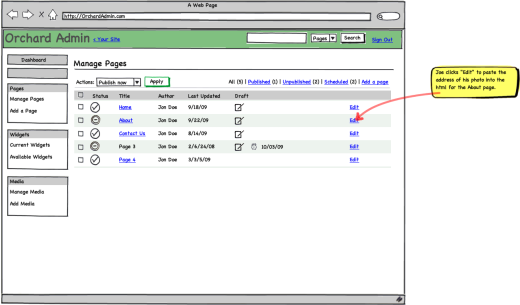
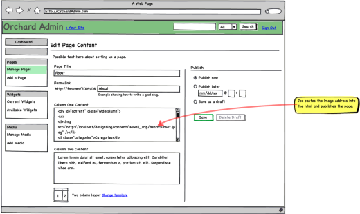
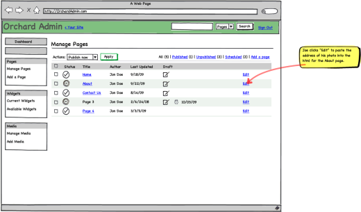
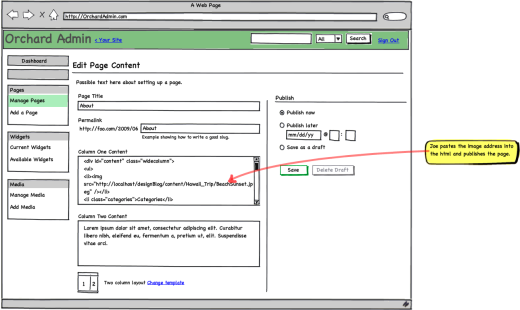